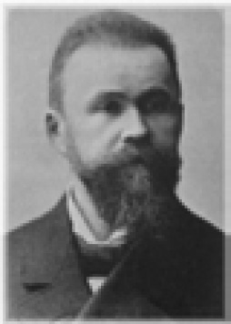
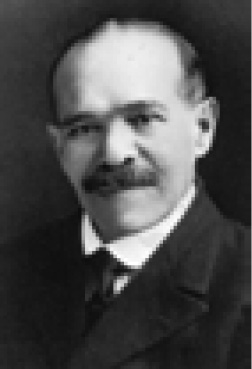
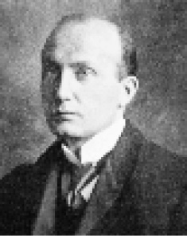
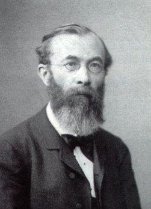

W
Wada testi (Wada test) Beyin yarımkürelerinin uzmanlaşmalarını incelemek amacıyla yarımkürelerden birinin uyuşturulduğu bir test. Testte uyuşturulma, sol ya da sağ yarımküreye sodyum amatal verilerek gerçekleştiriliyor. Daha sonra, enjeksiyon yapılan yarımküre örneğin dilde ağır basan yarımküre ise disfazi belirtileri ortaya çıkıyor. İki yarı farklı günlerde test ediliyor. Bu tür testlerde, sağ elli insanlarda konuşmada genellikle sol yarımkürenin ağır bastığı görülüyor; ancak bu kuralın dışında kalan birçok kişiye de rastlanmıştır. Bkz. beyin; yanallaşma.
WAIS Bkz. Weshler yetişkin zekâ ölçeği.
Walden Two toplumu (Walden Two Community) Davranış bilimine dayalı bir topluluk. Bu topluluğun üyeleri, insan davranışı konusunda davranışçı bir felsefeye inanıyorlar. Topluluk, adını B.F. Skinner’in işlemsel koşullama ilkelerine göre yaratılan ütopik bir toplumu anlatan Walden Two adlı yapıtından almıştır.
WATSON, John Broadus (1878-1958) Amerikalı psikolog; davranışçılığın kurucusu. “Bana rastgele bir bebek verin; soyu sopu, yetenekleri, eğilimleri, becerileri ve benzerleri ne olursa olsun, ondan istediğim şeyi yaratayım: Bir doktor, avukat, tüccar; hatta bir hırsız, bir katil.” diyen kişi. Watson, Güney Carolina, Grreenvilel’de yoksul bir ailenin çocuğu olarak dünyaya geldi. Katı dindar bir anne ile ayyaş, evlilik dışı ilişkiler peşinde olan bir babanın arasındaki çatışmaların ortasında büyüdü; babası tarafından terk edildi. Sorunlu, şiddet eğilimli bir çocukluk dönemi geçirdi. Anne babası gibi, ilk evliliğini yürütemedi. O da babası gibi evlilik dışı ilişkilere yöneldi ve sonunda boşandı. Çocukları ile ilişkileri de babası gibi hiç iyi olmadı. Buna karşılık, davranışçılık adını verdiği psikoloji yaklaşımı konusundaki gözlem ve çalışmalarını gerçekleştirdi. Furman Üniversitesi’ndeki öğrenimini tamamladıktan sonra Chicago Üniversitesi’nde psikoloji doktorası yaptı. Bilinçlilik, içgözlem, içgüdü gibi kavramları reddetti. Bunların, bilimsel bir çalışmanın konusu olamayacağını savundu. Bunun yerine dışardan gözlenebilen, ölçülebilen davranışları; uyaran-tepki ilişkilerini, öğrenilmiş davranışları ve koşullamayı öne çıkardı. 1920’de ilk ve ünlü deneyini yayımladı. Bu deneyde, yüksek bir zil sesini kullanarak Küçük Albert diye adlandırdığı küçük bir çocukta, beyaz bir kobaya karşı, koşullu bir korku oluşturdu. Daha sonra bu koşullu korkunun, beyaz kürklü öteki nesnelere de genelleştirildiğini gördü. Bunlar arasında, Noel Baba sakalı ile Watson’ın kendi ak saçları da vardı. Watson, yaşadığı bir cinsel skandal nedeniyle Hopkins Üniversitesi’ndeki görevinden alınınca reklamcılık işine girişti. Geliştirdiği davranışçı teknikleri, bu alanda kullanmaya başladı. Ölümünden kısa süre önce, yayımlanmamış bütün çalışmalarını yaktı. Başlıca yapıtları: Behavior: An Introduction to Comparative Psychology (1914), Psychology From the Standpoint of a Behaviorist (1919), Behaviorism (1924) ve The Psychological Care of Infant and Child (1928). Bkz. davranışçılık; davranışçı psikoloji; karşı koşullama; öğrenme kuramı.
WEBER, Ernst Heinrich (1795-1878) Alman fizyoloji ve anatomi bilgini. Weber, Wittenberg’de doğdu; Leipzig’de öldü. Leipzig Üniversitesi’nde profesörlük yaptı. İnsan anatomisi, karşolaştırmalı anatomi ve mikroskobik anatominin ilerlemesine katkı sağladı. Bunların dışında G. T. Fechner’le birlikte psikofizik üzerinde çalıştı ve duyularla ilgili Fechner yasası ile Weber yasasını ortaya koydular.
Weber yasası (Weber’s law) Alman psikolog Ernest Heinrivh Weber’in keşfettiği bir uyarıcı enerjisindeki fark edilebilir en küçük enerji farkının “ancak fark edilebilir fark’ın), uyarıcı şiddetinin sabit bir kesri olduğu ilkesi. Başka söyleyişle uyarıcıda bir fark algılamak için gerekli olan değişim miktarının, özgün uyarıcının şiddetiyle doğru orantılı olduğu yasası. Bu yasa, orta aralıktaki uyarıcıların çoğunda geçerliliğini koruyor; ancak çok yüksek ve çok düşük şiddetlerde bu yasanın geçerliliği kalmıyor. Algı psikolojisinde önemli bir yeri olan ve duyumlara ilişkin yargılarımızın göreliğini belirleyen bu yasanın biraz genişletilmesi, biraz da yorumlanması ile Fechner yasası oluşmuştur.
Wechsler-Bellevue Ölçeği (Wechsler-Belleue Scale) Yetişkinler için standartlandırılmış olup ergenlere de uygulanabilen bireysel bir genel zekâ testi bataryası; W. B. Ölçeği. Dile dayanan ve dayanmayan sorulardan oluşturulmuştur. Amacı, yetişkinlerin ve ergenlerin güçlü ve zayıf yanları ile genel gelişim düzeylerini ölçmektir. Dile dayanan ve dayanmayan sorularla tüm test için ayrı ayrı zekâ bölümleri vardır. Zekâ yaşları ile zekâ bölümleri, alışılagelen yoldan daha değişik biçimde hesaplanmıştır.
Wechsler okul öncesi ve birincil zekâ ölçeği (Wechsler Preschool and Primary Scale of Intelligence (WPPSI)) 4-7 yaş arası çocuklarda yaygın olarak kullanılan ve erişkinlere uygulanan versiyonundaki gibi sözel ve performans olmak üzere iki bölümden oluşan bir zekâ testi. Bkz. Wechsler yetişkin zekâ ölçeği.
Wechsler yetişkin zekâ ölçeği (Wechsler Adult Intelligence Scale (WAIS)) David Wechsler’in 1955’te geliştirdiği ve daha sonra güncelleştirdiği, erişkinlere yönelik bir zekâ testi. Bilgi, karşılaştırma, aritmetik, benzerlik, sözcük dağarı ve benzerlerinden oluşan sözel; resim tamamlama, blok tasarımı, resim düzenleme, nesneleri birleştirme ve benzerlerinden oluşan performans olmak üzere iki bölümlü bu zekâ testi, Stanfort-Binet Testi’ndaki kimi eksiklikleri de giderdiği için oldukça yaygın biçimde kullanılıyor. Bu testin uygulanışından elde edilen puanlar, sözel ve performans olarak ayrı ayrı değerlendirilebildiği gibi genel bir IQ ölçümü biçiminde de değerlendirilebiliyor. Bkz. Wechsler okul öncesi ve birincil zekâ ölçeği.
Wedenski etkisi (Wedensky effect) Belli bir uyarılma düzeyinde, sinir ve kasların hızlı bir titreşimle hazırlık tepkisi yapması. Bu düzey dışında, yalnızca bir kasılma ile onu izleyen gevşeme görülüyor.
Weismancılık (Weismannism) Edinilmiş özelliklerin kalıtımla geçmediğini ve genetik özelliklerin genler aracılığıyla bir kuşaktan sonraki kuşağa aktarıldığını savunan görüş.
Wernicke alanı (Wernicke’s Area) 1874’te Carl Wernicke’nin tanımladığı, beynin baskın yarımküresinde bulunan ve dili yorumlama, anlama yetisiyle belirleyici bir ilişkisi olduğu anlaşılan bir bölge. Konuşma ve ses bilgileri, işitsel bölgeden Wernicke alanına ulaşıyor ve burada içerik sözcüklerinin anlamı değerlendirilip yorumlanıyor. Sonra sözdizimi çözümlenmesi için Broca alanına aktarılıyor. Konuşma sırasında içerik sözcükleri, Wernicke alanından seçiliyor; bunlara Broca alanında dilbilgisel eklemeler yapılıyor; daha sonra bu bilgiler, konuşmanın üretilmesi için beyin kabuğundaki devinimle ilgili merkeze gönderiliyor. Beyinlerinin Wernicke alanı hasar gören kişiler, duydukları sözleri anlama yetisi ve anlamlı tümce kurma yetisini yitiriyorlar. Bunlar, konuşmaları dilbilgisine uygun; ama tutarsız ya da anlamsız konuşuyorlar. Bkz. dil merkezleri; Wernicke söz yitimi.
Wernicke bozukluğu Bkz organsal beyin bozuklukları.
WERNİCKE, Karl (1848-1905) Kendi adıyla anılan birçok beyin hastalığını tanımlayan Alman nöropsikiyatri ve nöroanatomi uzmanı. Wernicke, Yukarı Silezya’daki Tarnowitz kentinde doğdu; Dörrbergim-Geratal’da öldü. 1870’te Breslau Üniversitesi’nde Tıbbı bitererek 1875’te psikiyatri uzmanı oldu. Bir süre özel çalıştıktan sonra 1885’te Breslau Üniversitesi’nde nöroloji ve psikiyatri doçentliği görevine başladı. 1890’da profesör oldu. 1904’te Halle Üniversitesi’e geçtikten bir yıl sonra bir bisiklet kazasında yaşamını yitirdi. Ruh hastalıkları ile beyin hastalıkları arasında ayrım yapmayan Alman Nöropsikiyatri Okulu’nun önemli temsilcilerinden biri de Wernicke’dir. Afaziye ilişkin Belirtiler Karmaşası adlı kitabında, duyu ve devinim merkezlerinin beyindeki yerlerini belirleyerek lokalizasyon kavramının öncüleri arasına girdi. Kimi kişilerde beynin sağ ya da sol yarımküresinin egemenliğine dikkat çekerek, yazılı sözcüklerin ya da konuşmaların anlamını kavrayamama demek olan Wernicke söz yitimini ilk kez tanımlayarak bu hastalığın sol şakaktaki ilk beyin kıvrımının arka bölümüne rastlayan bir doku bozukluğundan kaynaklandığını belirledi. Günümüzde yine onun adıyla anılan bir başka hastalık da akut kanamalı üst boz madde iltihabı olarak tanımladığı Wernicke hastalığıdır. Bozmaddenin kimi bölgelerindeki dokuların yıkımı sonucu ortaya çıkan hastalık, özellikle bilinç ve düşünce bozuklukları, istemli hareketlerde düzensizlik, göz kasları felci belirtileriyle kendini belli ediyor ve en çok süreğen alkoliklerde görülüyor. Wernicke, arkadaşlarıyla birlikte hazırladığı Beyin Atlası ile beyin anatomisine de katkı yapmış; yetkin gözlemleriyle klinik nöropsikiyatriye değerli bulgu ve tanı yöntemleri kazandırmıştır. Başlıca yapıtları: Der aphasische Symptomencomplex, 1874 (Afaziye İlişkin Belirtiler Karmaşası); Lehrbuch der Gebirnkrankbeiten, 3 cilt, 1881-1883 (Beyin Hastalıkları Ders Kitabı); Atlas des Gebirns, 1897-1903 (Beyin Atlası). Bkz. Wernicke bozukluğu; Wernicke sendromu; Wernicke söz yitimi.

Werniçke-Korsakof sendromu (Wernicke-Korsakof syndrome) Çoğu, yoğun alkol kullanımıyla ilişkili olarak ve sıklıkla aynı bireyde ortaya çıkan iki hastalık tablosu. İki durumun da tiyamin (B1 vitamini) eksikliğinden kaynaklandığına inanılıyor; ancak, doku bozukluklarının yerinin belirlenmesindeki farklılıklar, farklı klinik tabloların ortaya çıkmasına yol açıyor. Örneğin, ilki tiyamin tedavisine yanıt verirken, ikincisi yanıt vermiyor. Bkz. alkol-amnestik bozukluğu; Korsakof psikozu; Wernicke sendromu.
Werniçke sendromu (Wernicke’s syndrome) Süreğen alkoliklerde sıklıkla rastlanan ve büyük ölçüde tiyamin eksikliğinden ileri gelen bir beyin hastalığı. Anormal göz hareketleri, kas eşgüdümünde güçlükler ve bilinç bulanıklığı, hastalığın belirgin belirtileri arasında yer alıyor. Bunların yanı sıra, bellek yitimi ve boşluk doldurma da görülebiliyor. Bu hastalık tablosu, kişide sıklıkla Korsakof sendromu ile birlikte ortaya çıkıyor.
Wernicke söz yitimi (Wernicke aphasia) Sol şakak beyin kabuğu, yan beyin kabuğu ve Wernicke alanı zedelenmesinden kaynaklanıp sözcüklerin anlamını kavrayamamaktan ötürü konuşulan dili anlayamama ve normal gibi görünse de oldukça anlamsız bir konuşma biçimiyle tanımlanan bir bozukluk. Bkz. Broca söz yitimi; söz yitimi.
WERTHEİMER, Max (1880-1943) Gestalt psikolojisinin kurucularından Alman psikolog. Wertheimer, Prag’da doğdu; ABD’de New York’ta öldü. Yetişme döneminde müziğe ilgi duydu; oda müziği yapıtları besteledi. Prag Karl Üniversitesi’nde başladığı hukuk öğrenimini ertesi yıl bırakıp 1901’de Berlin Üniversitesi Psikoloji Bölümü’ne girdi. Yüksek lisans çalışması sırasında, tanıklar için kullanılacak bir yalan makinesi üzerindeki çalışmalara katıldı. 1904’te doktorasını tamamladı. C. G. Jung’un sözcük çağrışım tekniği ve ve aleksiya (okuma becerisini yitirme) üzedeneysel psikoloji dersleri ile; felsefe, mantık ve matematik seminerleri ile büyük ilgi topladı. Hitler yrinde çalıştı. 1910-1916 arasında Frankfurt Üniversitesi’nde Köhler ve Koffka ile tanışmasının ardından algı konusunda yaptığı araştırmalar, daha sonra Gestalt psikolojisini doğurcak olan düşüncelerin gelişmesine yardımcı oldu. Psikjolojik incelemenin, nesnelliğin yanında olguyu değiştirmesini önleyecek bir yöntemin gerekliliği üzerinde çalıştı. 1916-1929 yılları arasında Berlin Friedrich Wilhelm Üniversitesi’nde psikoloji doçenti olarak görev yaptı. 1922’de Köhler ve Koffka ile birlikte Gestaltçı psikolojinin yayın organı olan Psychologische Forschung adlı bir dergi çıkarmaya başladı. 1929’da profesör oldu. Hitler tehlikesi yüzünden 1933’te Çekoslovakya’ya geçti. Aynı yıl ABD’ye gitti. Ölümüne dek orada New School For Social Research’de dersler verdi. 1910’lu yıllarda, hareket görsel algılanırken hareketsiz nesnelerin art arda sıralanışının değil; farklı bir bütünün algılandığını saptadı. Örneğin, bir film seyredilirken tek tek film kareleri değil; bir hareket algılanıyordu. Bu olgunun belirlenmesi, Wertheimer ve arkadaşlarının psikolojiye bakışlarını derinden etkileyen bu olgudan yola çıkarak ruhsal olayların, tekil öğelerin toplamı olmadığını; parçalanamaz bütünler, yapılar olduğu yargısına vardılar. Wertheimer bu bütünleri Gestalt diye adlandırdı. Daha sonra da bu görüşe Gestalt psikolojisi denildi. Wertheimer, Productive Thinking (Üretici Düşünce) (1945) adlı kitabında düşünce ve mantığın yasalarını; alışkanlığa bağlı davranışlarla yaratıcı, üretici edimlerin birbirinden ayırt edilmesinin zorunlu olduğunu ortyaya çıkardı. Psikolojide soru soran ve bilimler arasında tartışmayı zorlayan, kendi bilim dallarına önemli katkılar yapan bir psikoloji kuşağı yetiştirdi.

Wetzel ızgarası (Wetzel grid) Boy, ağırlık ve yaş arasındaki ailişkileri gelişim normlarına bağlı olarak hesaplayıp belirtmeye yarayan araç.
Whitten etkisi (Whitten effect) Ortamda erkek fare bulunmasının, dişi farenin ergenliğe erken girmesine yol açması.
Whorf varsayımı (Whorfian hypothesis) Konuştuğu dilin, kişinin düşünme ve dünyayı görme biçimini doğrudan etkilediği savı. Kimi zaman Sapir-Whorf varsayımı da denilen bu kuramın gerçekte biri zayıf, öbürü güçlü olmak üzere iki biçimi bulunuyor. Zayıf biçimde, yalnızca dünyaya ilişkin algıların dille biçimlendiği varsayılıyor. Buna örnek olarak Whorf, Eskimoların kar anlamında kullandıkları sözcükleri gösteriyor. Kar için tek bir sözcüğün bulunduğu öbür dillerin tersine Eskimolar arasında kar anlamına gelen çok sayıda sözcük vardır. Whorf’a göre bu, Eskimoların karı, öbür dillerdekinden farklı görmelerine yol açıyor; Eskimolar, kardaki çok küçük farklılıkları başkalarından daha iyi algılıyorlar. Güçlü biçimde ise soyut kavramsal süreçlerin de dilden etkilendiği varsayılıyor. Buna örnek olarak da kimi ilkel kabilelerin, zamanı göreli olarak değerlendirmesine karşılık, Batı toplumlarının zamanı, mutlaklaştırması (geçmiş, şimdiki ve gelecek gibi bölümlere ayırması ve sabit aralıklı bir ölçekte ölçmesi) gösteriliyor. Farklı dil gruplarında renk algılama üzerine yapılan araştırmalardan elde edilen bulgular, bütün kültürlerin, rengi aynı biçimde algıladığını gösteriyor. Bu durum, dilin insanların düşünme biçimini “belirlemediğini” düşündürse de dilin, düşünme biçimini etkilemediğini kanıtlamıyor. Dilin düşünmeyi tam olarak nasıl etkilediği, henüz açıklık kazanmamıştır. Örneğin, dilin düşünceyi dolaylı olarak belirlediği; yani dilin kendisini de maddesel koşullarla biçimlendirip belirlediği rahatlıkla düşünülebilir ve Eskimo örneği, bunu destekleyen bir veri olarak değerlendirilebilir. Farklı kar biçimleri, dilde buna ilişkin yeni sözcüklerin oluşmasını sağlıyor; dil de dönüp düşüncenin biçimlenmesinde etken oluyor.
Williams sendromu (Williams syndrome) DNA yapısında, 7 numaralı kromozomdaki bir genin eksik olmasından kaynaklanan ve çok küçük bir kafa, kalp anormallikleri, tipik bir yüz anlatımı ve hafif ölçüde zekâ geriliği ile ortaya çıkan bir genetik gelişim bozukluğu. Bu bozukluk görülen kişilerin birçoğunda otistik davranışlar da gözlemleniyor.
Wilson hastalığı (Wilson’s disease) Dokularda, özellikle karaciğerde ve merkezi sinir sisteminde aşırı bakır birikiminden kaynaklanan beyin hasarıyla tanımlanan otozomal, çekinik kalıtsal bir hastalık. Sarılık, güçsüzlük, titreme, ağır ve tutuk hareketler, kusma, bunama ve karaciğer yetmezliği, bu hastalığın belirtileri arasında yer alıyor. Bu hastalığa hepatolentiküler bozulma da deniyor.
Wisc-Çocuklara Özgü Wechsler Bellevue Testi (Wisc-Wechsler İntelligence Scale for children) Wechsler’in yetişkinlere özgü testinin, 5-15 yaşlar arasındaki çocuklar için 1949’da hazırlanmış türü.
Wisconsin Genel Test Aparatı (Wisconsin General Test Apparatus (WGTA)) Başlangıçta Wisconsin Üniversitesi’nde bir dizi öğrenme deneyine alınan çeşitli türden maymunlarda kullanılmak üzere tasarlanan ve değişik biçimleri, çeşitli hayvan türlerinde kullanılan bir deney düzeneği. Düzenek, içinde bir maymunun barınacağı bir kafesten ve çeşitli platformlar ile hayvanın kullanabileceği aletlerden oluşuyor.
Wolffian kanalı (Wolffian duct) embriyonda androjenik hormonların etkisiyle gelişip iç erkeklik organlarına dönüşen yapılar. Kadınlarda ve androjen anormalliği bulunan kişilerde bu kanallar gelişmiyor.
WOODWORTH, Robert Sessions (1869-1962) İşlevsel akımın önde gelen temsilcilerinden ABD’li psikolog. Woodworth, Massachusetts Eyaletinin Belchetown kentinde bir din adamının oğlu olarak doğdu; New York’ta öldü. 1897’de felsefe ve psikoloji öğrenimi yaptığı Harvard Ünüversitesi’ni bitirdi. Columbia Üniversitesi’nde iradi davranışlar konusundaki teziyle 1899’da doktorasını tamamladı. 1900’de New York’ta; 1902’de İskoçya’da Edinburg kentinde ünlü fizyologlarla birlikte araştırmalar yaptı. 1903’te Columbia Üniversitesi Psikoloji Bölümü öğretim üyeliğine başladı. 1912’de Almanya’da Wundt’la tanıştı. 1914’te Amerika Psikoloji Birliği başkanı oldu. 1956’da Amerika Psikoloji Vakfı’nın verdiği ilk Altın Madalya ödülünü Woodwrth aldı. Psikoljiye işlevselci nitelikli bir yöntem yaklaşımı gösterdi. Woodwort, temel ilşgi konusu olarak davranışları belirleyen koşulların incelenmesini seçti. Canlı organizmayı dikkate almadan yalnızca uyaran-tepki açısından davranışı incelemenin yetersiz olacağını düşündüğü için davranışların çözümlenmesinde içe bakış yönteminin de kullanılması gerektiğini ileri sürüyordu. Ona göre psikolojide de öbür bilim dallarında da nesnellik adına gözlemcinin varlığı yadsınamazdı. Davranışçıların yaptığının tersine gözlemciyi bile bile işin içine sokmak gerekirdi. Woodworth, davranışın açıklanmasında dürtü ve mekanizma kavramlarının kullanılmasını da öneriyordu. Son dönemlerinde ise davranış temelli bir güdülenme kuramı geliştirmeye uğraştı. Kitaplarının önemli bir bölümü psikoloji öğreniminde temel başvuru kaynağı olmuştur. Başlıca yapıtları: Dynamic psychology, 1918 (Dinamik Psikoloji); Psychology, 192ı (Psikoloji); Contemporary Schols of Psychology, 1931 (Çağdaş Psikoloji Okulları); Dynamics of Behavior,1958 (Davranışın Dinamikleri).

WUNDT, Wilhelm (1832-1920) İlk psikoloji deney laboratuvarının kurucusu, Alman psikolog ve düşünür. Wundt, Mannheim kentinin banliyösü olan Neckarau’da Protestan bir din adamının oğlu olarak doğdu; Grossbothen’de öldü. Heidelberg Üniversitesi Tıp Fakültesi öğrencisi iken ünlü fizyolog Johasnnes Müller’in öğrencisi oldu. 1856’da tıp doktoru derecesini aldı. Ertesi yıl, bitirdiği üniversitede öğretim görevine başladı ve ünlü fizyolog H. Von Helmholtz’a asistan oldu. 19858’de kas hareketleri konulu bir kitap; 1864’te de bir fizyoloji el kitabı yayımladı. Aynı yıl profofesör oldu. İlgisi giderek psikolojiye kayan Wundt, 1867’den sonra tümüyle psikolojiyle uğraşmaya başladı. 1874’te büyük yapıtı olan Fizyolojik Psikolojinin İlkeleri’nin ilk cildini yayımladı. Daha sonra ikinci cildini de yayımladığı bu kitabın 6 kez yeniden gözden geçirilmiş basımı yapıldı. 1874’te Zürih Üniversitesi’nde ders verdikten sonra ertesi yıl Leipzig Üniversitesi’nde oluşturulan psikoloji kürsüsünün başkanı oldu. 1879’da dünyanın, psikoloji laboratuvarıyla da donatılmış ilk Psikoloji Araştırmaları Enstitüsü’nü kurdu. 1881’de yayımlamaya başladığı dönemin ilk etkili ve sürekli dergisi Philosophische Studien’i 1903’ten sonra Psycholohische Studien adıyla yayımlamaya başladı. 1917’de emekliye ayrıldı. Wundt’a göre psikolojide incelenen konuya, fizik bilimlerden farklı olarak, müdahale edilmeden doğrudan yaklaşılmalıdır. İnsanın bilincinde olup bitenler izlenip ruhsal süreçler üzerine bilgilenme, içebakış (introspection) yöntemiyle gerçekleştirilebilir. Fizikle psikoloji arasındaki yöntem farkı, optik yanılsama örneğinde belirgin bir biçimde görülüyor. Suyun içindeki çubuk fizik bilimi için düz olduğu halde, içebakış yönteminin doğrudan izleyicisi, yaklaşımını o çubuğun kırık olarak algılanması üzerine kuruyor. Bireyin doğrudan deneylerinin açıklanmasını amaçlayan ve yapısı bakımından analitik olan içebakış yöntemi, bilinçli süreçleri öğelerine ayırarak aralarındaki bağlantıları ortaya koymaya çalışıyor. Farklı nitelik ve yoğunluktaki duyumların karmaşık algı ve düşünceler biçimine nasıl girdiklerini gösteriyor. Wundt’un laboratuvar çalışmaları, duyumlar ve algı ile tepki zamanının (uyarı anından uyarılanın tepki verdiği ana dek geçen sürenin) ölçümü üzerinde yoğunlaşmıştır. Bulduğu ölçüm yöntemleri o zaman çoşkuyla karşılanmışsa da sonra unutulmuştur. Wundt, 1900-1909 arasında İnsanlık Psikoljisi adlı 10 ciltlik kitapta dil, mitoloji, sanat, din, kültür, hukuk gibi konuları düzenli bir biçimde incelemiş; bu yolla laboratuvarda incelenemeyen düşüncenin doğasını anlamaya yönelik kimi sonuçları elde etmeye çalışmıştır. Değişik okulların temsilcisi olan birçok psikolog, özellikle içebakış yöntemini çok eleştirmiştir. Bunun nesnel bir yöntem olamayacağını; psikanalistler ise bilinçdışı süreçleri inceleyemeyeceğini belirtmişlerdir. Her şeye karşın, psikolojinin ayrı bir bilim dalı olarak kurulmasında Wundt’un etkisi büyüktür. Bu bilim dalına bir sistemleştirici, bir ansiklopedist ve bir deneyci olarak önemli katkılar sağlamıştır. Başlıca yapıtları: Die Lehre von der Muskelbewegung, 1858 (Kas Hareketleri Kuramı); Vorlşesungen über die Menschen-und Tierseele, 1863 (İnsan ve Hayvan Zihni Üzerine Dersler); Grundzüge der physiologischen Psychologie, 2 cilt, 1873-1874 (Fizyolojik Psikolojinin İlkeleri); Logik, 3 cilt, 1880-1883 (Mantık); Grundrissder Psychologie,1896 (Psikolojinin Anahatkarı); Völkerpsychologie, 10 cilt, 1900-1909 (Halkların Psikolojisi).
